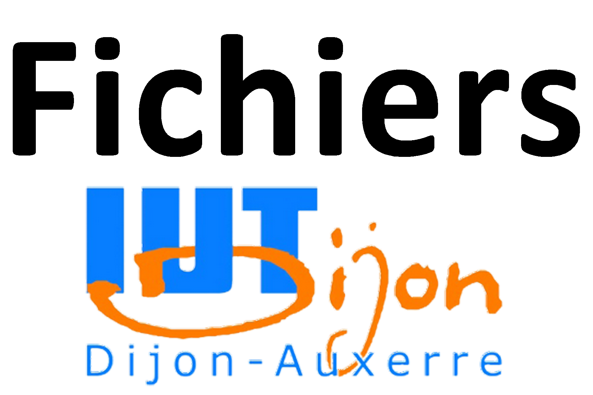

département informatique


Si le DUT prépare directement à l'insertion professionnelle, une très grande majorité des diplomés du DUT informatique poursuivent leurs études (environ 80%).
 Formations Bac+3
Formations Bac+3
Que ce soit dans l’université dont dépendait votre IUT ou une autre, les poursuites sont possibles vers l’université après un DUT. Vous entrerez ainsi directement en troisième année et pourrez valider une licence en 1 an seulement.
Vous pourrez ensuite poursuivre vos études avec un master informatique (bac+5). En master, vous aurez généralement la possibilité de vous spécialiser dans un domaine de l’informatique tel que e-services, intelligence artificielle, sécurité informatique, robotique, etc...
Liste des formations en licence informatique
Cette année de formation vient compléter les connaissances du DUT avec une spécialisation. Le but de ce diplôme bac+3 est de vous donner une expertise dans un secteur précis de l’informatique et de vous rendre opérationnel sur la marché du travail une fois cette année d’étude suivie.
Liste des licences professionnelles en informatique
Le Diplôme Universitaire d'Etudes Technologiques Internationales est un diplôme de niveau bac + 3, s'effectuant après deux années de DUT. Il offre à des étudiants la possiblité de compléter leur formation universitaire et professionnelle en lui apportant une dimension internationnale.
Formations Bac+5
Si vous n’avez pas intégré une école d’ingénieurs après le bac, mais que devenir ingénieur en informatique est désormais votre projet, vous pourrez entrer en école d’ingénieurs grâce aux admissions parallèles. Les formations d’ingénieurs sont généralement divisées en deux cycles : un bachelor en trois ans et un master en 2 ans.
Certaines écoles font passer des épreuves écrites et/ou des oraux.
Quelques exemples d'écoles d'ingénieurs en informatique :